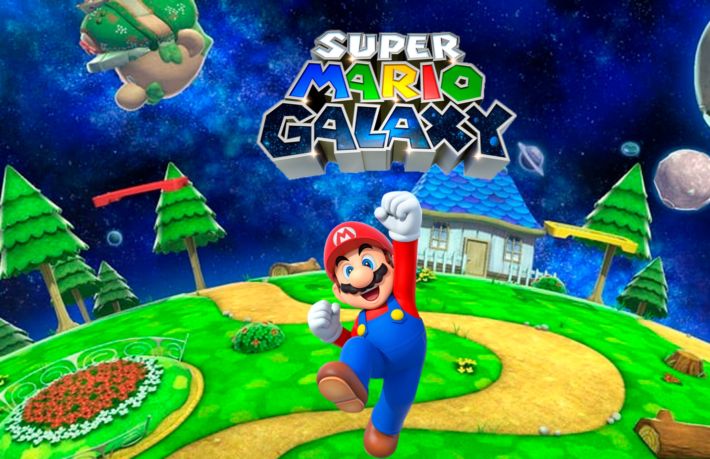

The plot takes up the classic elements that have distinguished the series —that is, in which the protagonists try to save the princess from the evil Bowser through various worlds, while defeating multiple enemies that complicate the journey, in addition to acquire various useful objects throughout your adventure, in order to achieve the main objective—; However, in this installment, the plot focuses on the galactic search that Mario and his brother Luigi must undertake to obtain objects called "Power Stars" (translated as "Superstars"), which have the ability to give energy to an artifact. called Planetarium of the comet, which works like a spaceship, and whose purpose is to be able to reach the place where Bowser is, since he has Princess Peach captive.